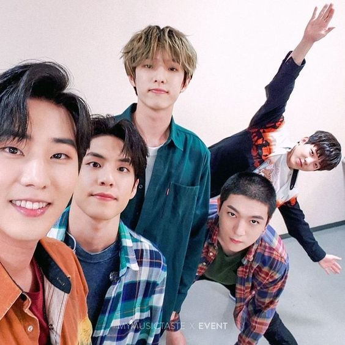

BTS
Stray Kids
Twice
Got7
TxT
Itzy
NCT
Black Pink
Red Velvet
Mamamoo
EXO
Super M
The Rose
Day 6
Ateez
BTS |
Stray Kids |
Twice |
Got7 |
TxT |
Itzy |
NCT |
Black Pink |
Red Velvet |
Mamamoo |
EXO |
Super M |
The Rose |
 Day 6 |
Ateez |
 |
Regresar |